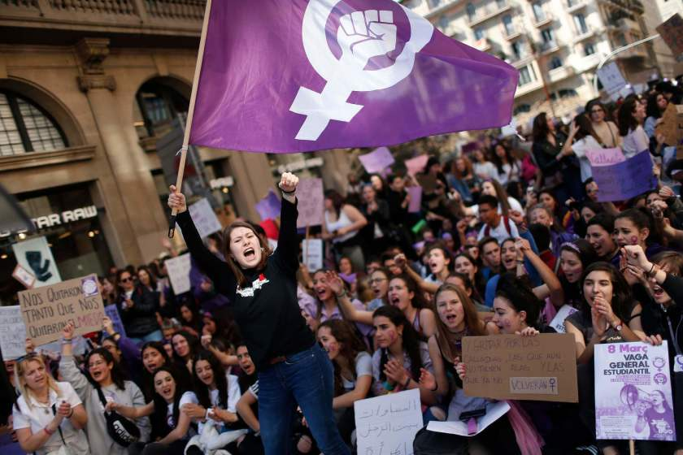

History of Women’s Day
The history of Women’s Day is steeped into antiquity which dates back to 1909 when the first National Woman’s Day was observed in the United States on February 28.
The Socialist Party of America celebrated this day in honour of the garment workers’ strike in 1908 in New York where women picketed and marched, demanding improved working conditions and equal rights.It was in commemoration of the first political activism to protect women’s rights that National Women’s Day was observed in the USA.
Inspired by American socialists, renowned German socialist Luise Zietz proposed establishment of ‘International Woman’s Day.’
The proposal was laid in the general meeting of the Socialist International in Copenhagen, Denmark in 1910.
Delegates, including 100 women from 17 countries, agreed with the proposal to promote equal rights and suffrage for women. It was on March 19, 1911, that International Women’s Day was observed for the first time in Germany, Austria, Denmark and Switzerland. Over 1 million men and women participated in rallies in demand for right to vote, to hold public office, women’s right to work, to vocational training and to end discrimination on job.
About International Women's Day
International Women's Day (IWD) is celebrated annually on March 8.
The day has occurred for well over a century, with the first IWD gathering in 1911.
The day is not country, group or organization specific - and belongs to all groups collectively everywhere.
Gloria Steinem, world-renowned feminist, journalist and activist once explained "The story of women's struggle for equality belongs to no single feminist nor to any one organization but to the collective efforts of all who care about human rights."
So make International Women's Day your day and do what you can to truly make a positive difference for women..
International Women’s Day honours the women who have paved the path towards our progress and struggled to take ‘womanhood’ to a level where it is now. Unfortunately, at the same time, the day is a reminder of the discrimination and inequality that still continues to plague our society.
This special day, dedicated to women around the world, is a celebration of the great success of women across all spheres of life as well as shaping the future.
The objective of Women’s Day is to express love and gratitude towards women’s’ contribution to our lives and society. It honours the power and struggles of women who have broken all barriers and reached the pinnacle of success in every sphere of life.
Today, women across the globe actively participate in politics, education, social work, corporate, sports, IT, research & development, innovation and diverse fields, and have left their footprints.